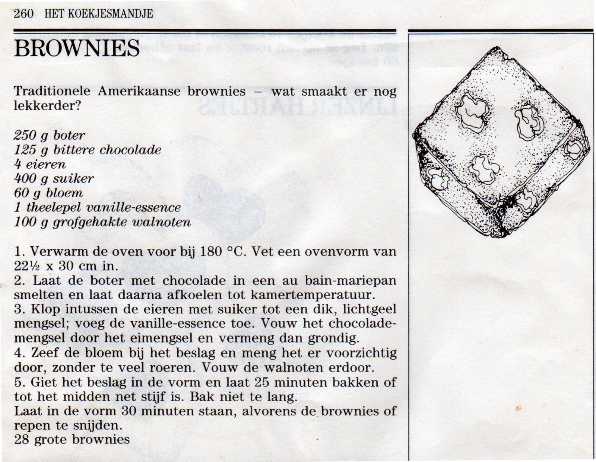

A simple gallery of video recaps of dancing lessons. Source hosted here:
learning-lindy
Fundamentals: 2 and 3
Send out
Send in
Change of places (3 variations)
Tuck turn from closed
Tuck turn from open
Front step send out
Tuck turn with two spins
4 count variations of everything
Fundamentals: 5
Tandem Charleston
Fundamentals: 9
Kick the dog with turn
Open doors
Fundamentals: Dips
Dip near side
Dip far side
Fundamentals: Sailor Kicks
Three exit variations
Fundamentals: Solo Work
Swivels
Kick ball change
Fundamentals: Swing Phrases
Swing Phrase
Circle
Kick ball change
Scissor kicks
Fundamentals: Over rotated swing outs
Over rotated swingouts with switches
Optional kick ball changes
Stomp off
Bonus content: Brownies!
Ivar made some fantastic brownies for a social dance, and later shared
with us the recipe.

Ivar provided some additional advice:
"One of the things to pay particular attention to would be the size
of the baking form. The recipe specifies 22.5x30 cm. If you have a
form of a different size make sure you don't put the whole recipe in
the form because they it will either be too dry or too wet. What I
do is that I either change the amount of batter I make, or divide
the batter between multiple forms (or eat it raw...). Enjoy!"
- Ivar
Fundamentals 2: Swingouts and Circles
In this second video the class performs a swing phrase, and then some
improvisation.
Fundamentals 3: Swingout variations
Swingout with inside turn
Swingout with outside turn
Swingout with jump
Fred Astaire variation
Almond variation
Bow to the queen
Fundamentals 4: Mirroring
Hold - step
Kick ball change
Squat pause
Fundamentals 5: Shag
Basic Shag step
Transition from Charleston to Shag
Transition from Shag to Charleston
Open Shag
The most gloriousestestest move of all
Fundamentals 6: Two Handed Swing Out
Two Handed Swing Out
Sugar Push
Fundamentals 7: Sugar Push Variations
Sugar Push with tap
Sugar Push with hold
Fundamentals 8: California Routine Part 1
A routine with our first aerial at the end
Swing out * 3
Circle
Kick the dog
Tuck turn
Change places
Break in five
Tango
Frog jump
Fundamentals 9: Gotta go fast
Fast swingouts from closed
Fast swingouts from open
Fast circle
Fundamentals 10: California Routine Part 2
Change places
Break in five
Tango
Frog jump
Fundamentals 11: California Routine Part 3
Tango
Frog jump
Jig walks
Tuck turn
Barrel Roll
Fundamentals 12: Full California Routine
In this session we finished the last of the california routine. The
full sequence:
Swing out * 3
Circle
Kick the dog
Tuck turn
Change places
Break in five
Tango
Frog jump
Jig walks
Tuck turn
Barrel Roll
Throw out
Fundamentals 14: Charleston Tandem
Guest starring: Lucia
Entry to Tandem
Tandem Exit
Tandem turn follower only
Tandem turn simultaneous
Fundamentals 15
A new routine, set to "Shout and Feel It" by Count Basie.
Swing out * 2
Circle
Kick the dog
Swing out * 2
Circle
Into Sailors
Exit to parallel solo work
Fundamentals 1: Frankie 6s
Frankie 6s
Frankie 6s in 8-count variation
Fundamentals 2: Frankie 6s Variations
Frankie 6s: Early return
Frankie 6s: Surprise swingout
Fundamentals 4: Circle
Fundamentals 5
Entrance to hand-to-hand
Exit from hand-to-hand
Swing Outs
Straight Swing Out
Rotated Swing Out
Swing Outs: Foot work variations
In this class we focused on swingouts with variations of the footwork.
In all cases we start with a back kick on 7, a front kick on 8, and
then three options for beats 1 and 2:
Rock step
Double ball change
Back kick on 1, ball change on 2
Overrotated Swingouts
Following on from Straight Swingouts and Rotated Swingouts, in this
session we focused on Overrotated Swingouts. We looked at a couple
different foot work variations to use during the continuous rotation.